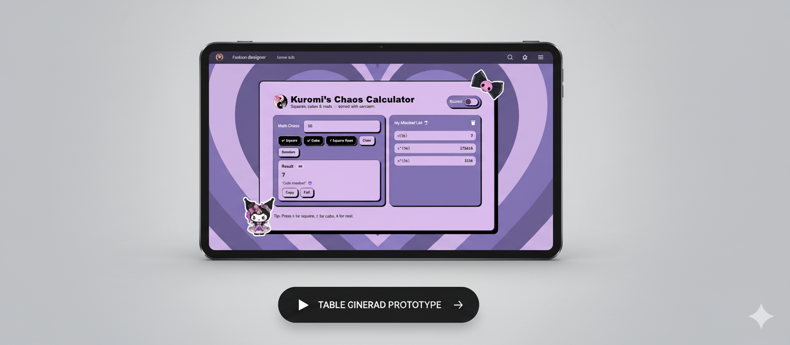

x² Square
Instantly computes the square of any entered number. Works for integers, decimals, and negative values.
Squares, cubes & roots — served with sarcasm. Built with love for a sister. 🖤

PERSONALIZED GIFT PROJECT
Built with love for a sister. 🖤
THE STORY BEHIND IT
"She asked if I could make her a calculator that was actually cute — so I did."
Every great project starts with a real problem. This one started with a sister who loves Kuromi and My Melody and kept struggling whenever she needed to quickly find the square, cube, or square root of a number — tools buried deep inside scientific calculators or plain-looking web apps that felt nothing like her personality.
The ask was simple: build something that feels hers. A calculator designed around two of her favorite Sanrio characters, with a theme toggle so she can switch between Kuromi's dark mischief and My Melody's soft sweetness — and a personality, down to the sarcastic quotes in the result panel.
What started as a quick gift became a full design + development project — covering math logic, DOM manipulation, theme switching, and a history panel the developer calls the "Mischief List."
PROJECT OVERVIEW
Kuromi's Chaos Calculator is a single-page, front-end web application built with zero dependencies — pure HTML, CSS, and Vanilla JavaScript. It was designed from scratch to feel like a Sanrio product page, not a math tool. The user types any number, presses one of three operation buttons, and gets an instant result with a sarcastic in-character Kuromi quote. A dedicated history panel stores every calculation performed in the session.
FEATURES
Instantly computes the square of any entered number. Works for integers, decimals, and negative values.
Calculates the cube of the input. Correctly handles negative numbers — a cubed negative stays negative.
Returns the square root. Flags imaginary results for negative inputs with a Kuromi-flavored error message.
Fills the input field with a random integer for quick fun calculations — great for quiz-style practice.
A scrollable history panel that logs every calculation with its expression and result. Clearable with one click.
Switch between Kuromi Mode (dark purple, edgy) and My Melody Mode (soft pink, sweet) with a single toggle.
The result panel displays a rotating pool of in-character Kuromi quotes after every calculation for personality.
Copy result to clipboard instantly. Round button trims irrational roots to a clean decimal for readability.
MATH ENGINE
The calculator covers three mathematical operations. Each is implemented as a pure function — no state, no side effects — so the logic is testable and reusable independently of the UI.
f(n) = n × n = n² — Multiplies the number by itself. Works for all reals including negatives and zero. −7² = 49
f(n) = n × n × n = n³ — Raises to the third power. Negative input yields a negative result. −3³ = −27
f(n) = √n = n^(1/2) — Returns principal square root. Negative input triggers imaginary number warning. √144 = 12
| Input | Operation | Expected | How Handled |
|---|---|---|---|
| 0 | Square / Cube | 0 | Normal computation, displays 0 cleanly |
| −5 | Square | 25 | Negative × negative = positive; correct |
| −5 | Cube | −125 | Odd power preserves sign; correct |
| −9 | Square Root | Error | Displays "chaos detected 💀" Kuromi error |
| Empty | Any | Error | Prompt to enter a number first |
| Text / NaN | Any | Error | Input validated before computation |
| 0.25 | Square Root | 0.5 | Decimal input supported; precise result |
ALGORITHM DESIGN
CORE LOGIC
// ── Math Engine (pure functions) ────────────────────────────
const square = n => n ** 2
const cube = n => n ** 3
const root = n => {
if (n < 0) throw new Error('chaos detected 💀')
return Math.sqrt(n)
}
// ── Input Validation ─────────────────────────────────────────
function validate(raw) {
const n = parseFloat(raw)
if (raw.trim() === '' || isNaN(n))
throw new Error('enter a number first 🖤')
return n
}
// ── Compute & Render ─────────────────────────────────────────
function calculate(operation) {
try {
const n = validate(inputEl.value)
const ops = { square, cube, root }
const result = ops[operation](n)
const expr = formatExpr(n, operation)
showResult(result, expr)
addToHistory(expr, result)
playTone()
} catch (err) {
showError(err.message)
}
}
// ── History ──────────────────────────────────────────────────
const history = []
function addToHistory(expr, result) {
history.unshift({ expr, result, time: new Date() })
const li = document.createElement('li')
li.innerHTML = `<span>${expr}</span> = <strong>${result}</strong>`
historyList.prepend(li)
}
function playTone() {
const osc = ctx.createOscillator()
osc.frequency.value = 520 // Kuromi: slightly eerie pitch
osc.type = 'sine'
osc.connect(ctx.destination)
osc.start()
setTimeout(() => { osc.stop(); ctx.close() }, 150)
}
// ── Theme Toggle ─────────────────────────────────────────────
function toggleTheme(isKuromi) {
document.body.dataset.theme = isKuromi ? 'kuromi' : 'melody'
}DUAL THEME DESIGN
The toggle button switches the entire visual identity of the app between two distinct Sanrio personalities, all driven by swapping a data-theme attribute on the <body> tag and CSS custom properties doing the rest.
Deep dark purple backgrounds; black operation buttons with white text; edgy rounded-rectangle layout; sarcastic, mischievous quote tone; lower-pitch eerie oscillator tone; skull & dark emoji decorations.
Soft pastel pink backgrounds; bubblegum pink operation buttons; rounded, soft card edges; sweet, encouraging quote tone; higher-pitch cheerful oscillator tone; heart & flower emoji decorations.
:root {
--bg-main: #1a0a2e;
--accent: #7c3aed;
--btn-bg: #000000;
--quote-col: #c084fc;
}
[data-theme="melody"] {
--bg-main: #fdf2f8;
--accent: #db2777;
--btn-bg: #f472b6;
--quote-col: #be185d;
}CHALLENGES & SOLUTIONS
Math.sqrt(−n) returns NaN, not an error. The solution was a pre-check inside the root function: if n < 0, throw a custom error and display a Kuromi-flavored "imaginary chaos" message before Math.sqrt is ever called.
√2 = 1.4142135623… — displaying all digits is ugly. The default shows full precision; the Round button calls toFixed(4) on demand. Users choose their level of detail.
Rebuilding theme logic with class toggles caused visual flashes. The solution was to use CSS transition on all color properties and switch via a single data-theme attribute, letting CSS handle the rest instantly.
Appending many DOM nodes repeatedly degrades performance. Used prepend() instead of appendChild() so new entries appear at the top, and limited visible items via CSS overflow-y: auto with a max-height.
S, C, R keyboard shortcuts could interfere with typing in the input field. Added a check: if (event.target === inputEl) return — shortcuts only fire when focus is outside the input field.
INPUTS & OUTPUTS
| Input | Type | Range | Notes |
|---|---|---|---|
| Number field | Float / Int | Any real number | Supports negatives, decimals, large integers |
| Operation | Button click / Keyboard | Square, Cube, Root | S / C / R keyboard shortcuts supported |
| Random | Button click | Auto-generated | Fills input with a random integer 1–999 |
| Theme Toggle | Toggle switch | Kuromi / My Melody | Persists via data-theme on body |
| Output | Format | Location | Status |
|---|---|---|---|
| Computed Result | Number (full precision) | Result panel | Live |
| Expression Label | e.g. "7² = 49" | Result panel | Live |
| Kuromi Quote | Random string from pool | Below result | Personality |
| History Entry | Expression + result row | Mischief List panel | Session |
| Clipboard Copy | Plain text number | System clipboard | Implemented |
| Rounded Result | toFixed(4) | Result panel | On Demand |
| Input | Operation | Result | Quote Shown |
|---|---|---|---|
| 9 | x² Square | 81 | "Kuromi's not a bad girl… just a little mischievous." 😈 |
| −3 | x³ Cube | −27 | "Even chaos has its patterns." 🖤 |
| 144 | √ Root | 12 | "That was too easy for me." 💅 |
| 2 | √ Root | 1.4142135… | "Irrational. Just like me." 💀 |
| −4 | √ Root | Error | "chaos detected 💀 — that's imaginary!" |
KEY OUTCOMES
The primary goal was to make math feel approachable and fun for someone who found standard calculators intimidating. The Sanrio theme, sarcastic quotes, and Mischief List history gave it personality — making it something she opens daily instead of a bookmark she forgets.
Every operation — including negative squares, negative cubes, zero inputs, irrational roots, and imaginary results — is computed correctly and displayed clearly without breaking the UI.
The CSS custom property architecture means switching themes is instant and flicker-free. Both Kuromi and My Melody modes feel like fully realized products, not just color swaps.
SKILLS PRACTICED & LEARNINGS
zero, negative inputs, irrational results, and imaginary numbers; pure function design; precision handling and using toFixed() for display.
Clipboard API, DOM manipulation, keyboard events, and error handling with try/catch flow.
CSS custom properties for theme switching; Sanrio-accurate color palette; personality-driven UX; responsive, accessible layout.
CONCLUSION 🖤
Kuromi's Chaos Calculator is proof that the best projects come from real, personal motivation. It wasn't built to impress anyone or to check a skill off a list — it was built so one person's experience with math could be a little softer, a little more fun, and a lot more her.
Technically, it exercises a meaningful range of front-end skills: pure function math logic, DOM manipulation, clipboard integration, keyboard shortcuts, CSS theming, and error handling. But the real design challenge was the human one — building something that feels like a product someone loves, not just a tool that works.
The Mischief List, the sarcastic quotes, the oscillator tone, the toggle between dark mischief and soft sweetness — none of that was required by the math. All of it was required by the person it was made for. That balance between function and feeling is what makes this more than a practice project. It's a gift. 🖤
LIVE PROJECT
Kuromi's Chaos Calculator · Case Study · Built with ♡ for a sister